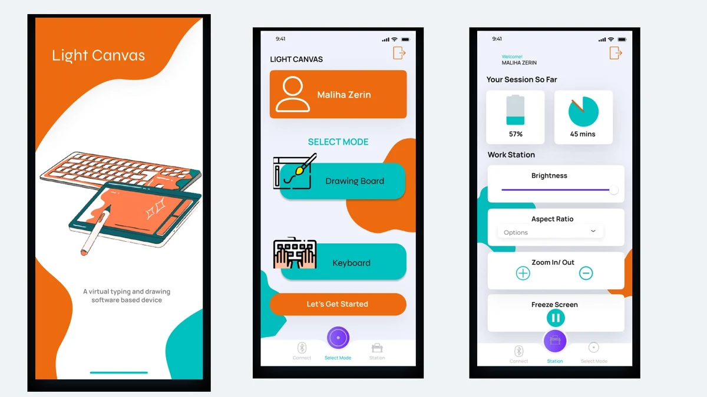

Light Canvas
Completed project · Published paper
Turning a flat surface into an interactive drawing space through computer vision and IoT.
Project notes
The problem
Interactive educational tools can require dedicated computing devices. Light Canvas explores a portable alternative for drawing and learning.
My contribution
I developed an end-to-end system integrating visual tracking, sensing, image processing, application software, and real-time interaction.
Methods & tools
Python, OpenCV, image processing, IoT, Flutter
Outcome
The work was published at ACM ICCA 2024.